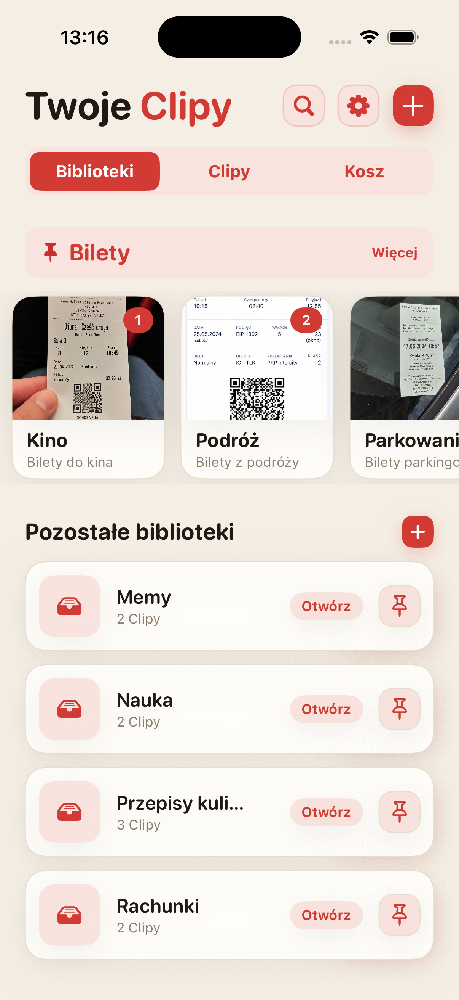
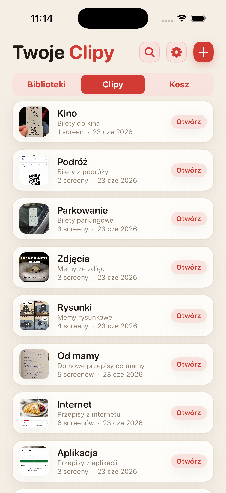
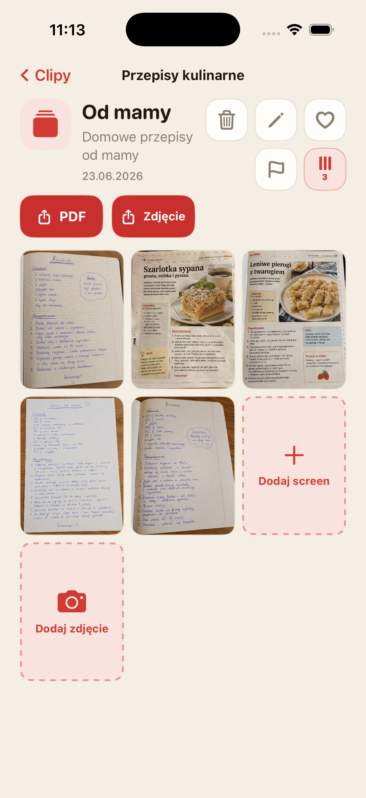
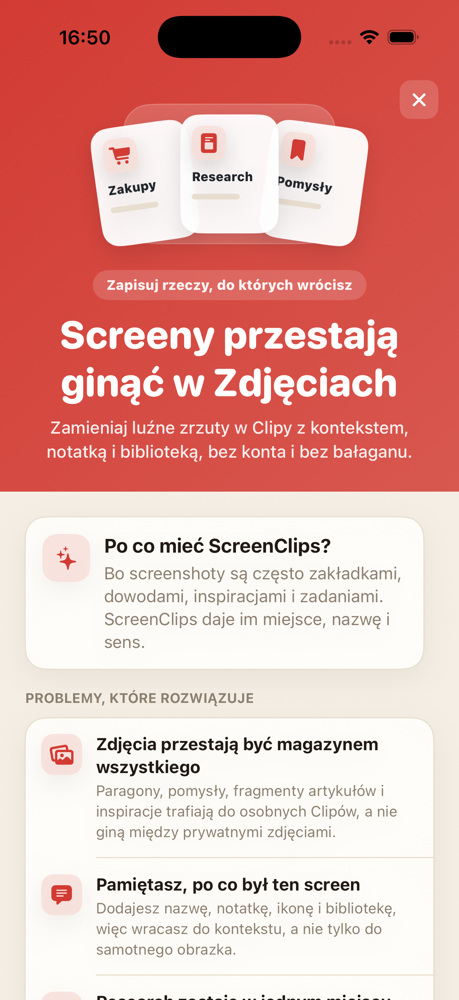

Screen znika w tłumie
Zapisujesz coś ważnego, a po tygodniu przewijasz galerię jak taśmę dowodową.
Zamieniaj luźne zrzuty ekranu w Clipy z nazwą, notatką i biblioteką. Bez konta, bez chmury, bez codziennego polowania po galerii jak archeolog z telefonem.

Paragony, przepisy, bilety, pomysły i fragmenty artykułów lądują obok selfie, memów i przypadkowych zdjęć sufitu. Ludzkość naprawdę wymyśliła chmurę, żeby potem nie móc znaleźć screena z adresem hotelu.
Zapisujesz coś ważnego, a po tygodniu przewijasz galerię jak taśmę dowodową.
Sam obraz często nie wystarcza. ScreenClips pozwala dodać nazwę i notatkę.
Zakupy, praca, podróże i nauka potrzebują osobnych miejsc, nie jednego worka w Zdjęciach.
Oddziel tematy: przepisy, rachunki, bilety, research, nauka albo cokolwiek jeszcze próbujesz utrzymać przy życiu.
Clip to paczka wokół jednego tematu. Ma nazwę, opis i swoje screeny.
Otwierasz bibliotekę, wybierasz Clipa i masz wszystkie materiały razem.

ScreenClips nie próbuje zgadywać za Ciebie. Daje prostą strukturę: biblioteka na temat, Clip na konkretną sprawę, screeny i zdjęcia w środku.
Zbieraj materiały w Clipach i uzupełniaj je, gdy temat rośnie.
Zamień Clipa w czytelny plik, gdy chcesz coś wysłać lub zachować poza aplikacją.
Ulubione, flagi i porządek tam, gdzie wcześniej była tylko przewijana rozpacz.

ScreenClips działa lokalnie. Nie potrzebujesz konta, żeby zrobić porządek. Nie musisz oddawać swoich paragonów, notatek i planów w ręce kolejnej usługi, która bardzo chce „poprawiać doświadczenie”.
Premium nie komplikuje aplikacji. Daje więcej przestrzeni na biblioteki, Clipy i screeny. Cena jest widoczna w App Store.
Pobierz zApp Store
Nie. Usunięcie materiału z Clipa nie oznacza usunięcia oryginału ze Zdjęć.
Tak. ScreenClips jest zaprojektowany jako lokalny organizer na iPhonie.
Nie. ScreenClips nie potrzebuje konta do porządkowania Twoich Clipów.
Tak. Możesz dodawać screeny i zdjęcia, jeśli pasują do danego Clipa.
ScreenClips porządkuje rzeczy, które zapisujesz „na potem”. Tym razem potem naprawdę je znajdziesz.
Pobierz zApp Store